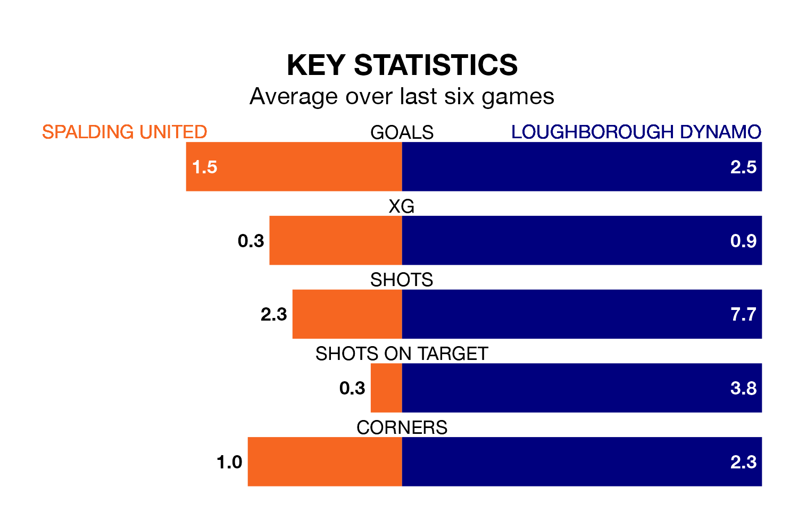

Spalding United host Loughborough Dynamo in Saturday's match at Sir Halley Stewart Field looking to bounce back from defeat last time out in the Northern Premier League Division One Midlands.
Spalding, who sit second in the league after 27 games, fell to a 2-1 away defeat to Bedworth United on February 17.
They face a Loughborough Dynamo side who picked up a win in their last match, a 4-2 victory against Sutton Coldfield Town, and who sit fourth in the table.
With 57 goals in 27 games so far this season, Spalding are the league's third-highest scorers with 2.1 goals per game. And they are conceding fewer than average, letting in 27 goals at a rate of 1.0 per game.
Loughborough Dynamo are also above average scorers, with 2.0 goals per game, compared to a league average of 1.5. They have conceded 1.3 goals per game.
In the last 10 years, Spalding and Loughborough Dynamo have played each other on six occasions. Spalding won two of them, Loughborough Dynamo three, and they drew once.
On average, Spalding scored 1.5 goals and Loughborough Dynamo 1.3 in those matches.
Their last meeting was on October 7, when Loughborough Dynamo won 3-1 at home.
United are in reasonable form in the Northern Premier League Division One Midlands, with four wins and two losses from their last six games.
With five wins and one loss over that period, the away team's form is better – they have taken 15 points from 18, compared to the hosts' 12.
Updated: 12:18 (UTC), 19/02/24